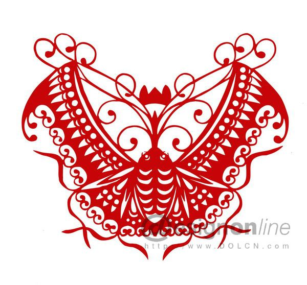
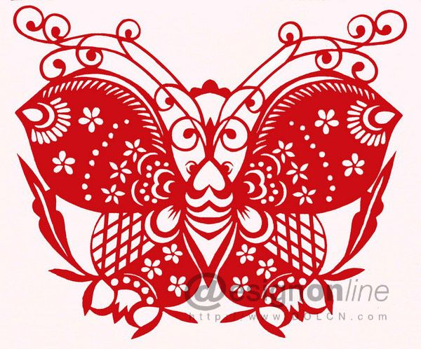
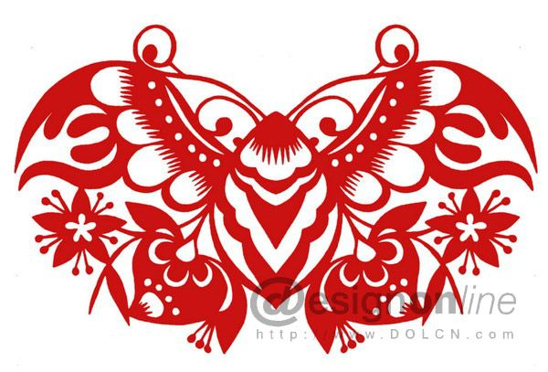
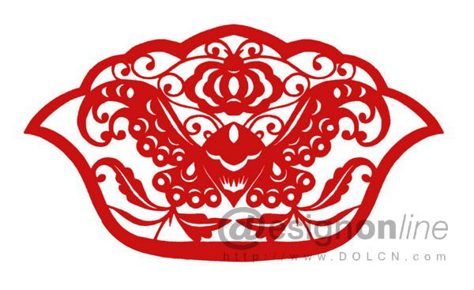
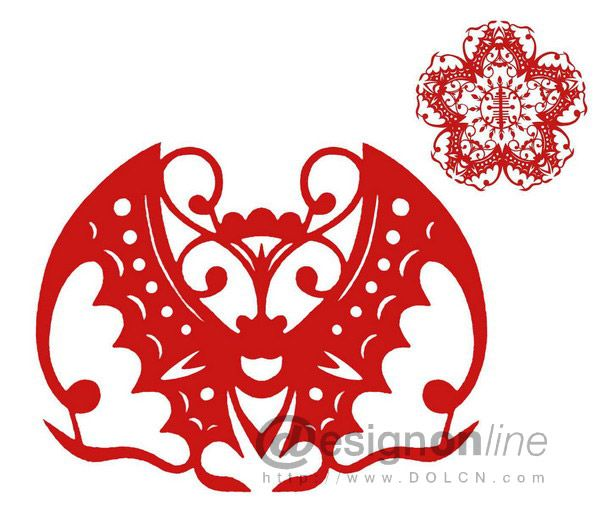

中国剪纸艺术:凿花
以剪纸对象和凿刻工艺突出湘西凿花在中国剪纸艺术上的特色，详细介绍了泸溪县踏虎乡已故民间艺术大师--黄靠天的凿花制作工艺，从图像学的角度对其部分代表作品进行了解读，并从工艺形式、创作手法和画面内容三方面指出了黄靠天凿花作品的艺术特色，以期为保护好湘西踏虎凿花这一非物质文化遗产提供具有学术价值的理论支持。
1、湘西踏虎凿花背景
至今仍流传于湘西少数民族地区的，用于各种服饰及装饰品的剪纸叫凿花，即凿纸花样，"湘西人照习惯叫它做'扎花'或'锉纸'"[1]（P.186），又称"锉花"。凿花在苗语中还被称为"压本"，"压"指加工的方式，相当于"凿"。"本"就是"花"、"花样"的意思。[2]这种剪纸不是用剪刀铰出来的，却是用刻刀凿制完成的，并且有的还留出刺绣针法等提示。而剪刀只是作为辅助工具，一般是在作品完成之后，仅供修边时使用。清代，刺绣也曾被江浙一带称作凿花。如明末清初文学家余怀（1616－1696）在《妇人鞋袜辨》中载："吴下妇人……有凿花玲珑，囊以香麝……印香在地者。"这说明旧时"凿花"就与绣花有紧密的联系。
1.1 剪纸与凿花
剪纸是我国民间最普及的一种构成艺术形式，从广义上讲，剪纸实际上就是指在纸上剪刻、镂空出所要表现的二维艺术形象。在大多数人的概念中，剪纸主要是指用红纸或其他暖色彩纸做成在世俗生活和喜庆节日中表达美好情感、营造热闹氛围的装饰品。而实际上，若以制作工具和对象来分，又有剪纸和刻纸两种类别。其中剪纸以剪为主，以刻为辅，主要用于喜庆节日的窗花或其他装饰花样，如陕西、山西、河北、山东等北方地区的民间剪纸；刻纸则以刻为主，以剪为辅，主要用于服饰的花样和喜笺等。如南方的浙江乐清细纹刻纸，江苏宜兴、南通刻纸和文中的湘西踏虎凿花等等。在南方，这种以刻刀在薄片材料上凿花的工艺手法并不罕见，如佛山的铜凿金花工艺，就是先将铜片打制成薄如纸片的铜箔，再在铜箔上用刻、凿等技法加工成镂空的凿花。[3]（P.49）
1.2 凿花的作用和意义
苗族是个爱美善绣的民族，他们十分重视服饰穿着。历史上是先有绣花，后有凿花，凿花为绣花提供绣模，绣花又促成凿花花样不断创新。苗家妇女一般是先将构思好的花样剪铰出来，贴在要绣的布面上，再依样穿针刺绣。遇到他人好看的花样，就用纸将它拓剪下来相互交换。这部分拓剪工作渐渐成为一个工种，从绣花流程中分离出来，就这样一些专门凿剪绣花底样的剪纸艺人出现了。与单纯使用剪刀铰花相比，剪纸花匠为追求效益，利用刻刀可小批量加工复制的凿花工艺就自然应运而生了。
湘西凿花多用于绣花底样和庆典、祭祀活动中的装饰品，而且后者颜色上有讲究，喜事用红纸、丧事用白、黄、蓝纸。凿花图案纹样题材广泛，有花草、鸟兽、虫鱼、傩面等多种。苗族的各种服饰绣花，一般都有着特定的外部形状。其形状既有长条形的，也有圆形或多边形的，还有任意形的。这主要是依据其在苗服中所在的绣花部位决定的，如衣裤的衣边、袖口及围腰；鞋垫和袜子；头巾、枕巾和门帘；幼儿的口水褡和兜兜帽；生活什物如荷包和褡裢等部位。
凿纸花样不仅是苗族妇女美化生活的一种生产及装饰形式，更是能折射出苗族文化的形象化符号载体。由于苗族没有自己的文字，其民族文化的信息，除了口头外就是类似凿花等图像化语言了，可以说是凿花这种原生态艺术很好地将苗族传统吉祥图形代代传承了下来。因此，凿花这种"剪在纸上、绣在衣上、穿在身上"[3]（P.51）的图案形式成为苗族文化最形象的历史读本了。
1.3 泸溪踏虎凿花
如上所述，苗族多彩的服饰民俗，是促成凿花以刻刀批量化生产的直接原因，加上南方荆楚地区发达的古代造纸业和冶炼铸造工艺，为凿花的出现提供了纸质和刻刀等生产资料。如保存至今我国最早的一部专门记载古代南方岁时节令的专著、南朝梁代宗懔（约501-565）所撰写的《荆楚岁时记》中有"正月七日，为人日。以七种菜为羹，翦（剪）彩为人，或镂金箔为人，以贴屏风，亦戴之以头鬓，亦造华胜（把丝绢剪成花卉形成的装饰，是古代妇女的一种首饰）以相遗（赠送）"等句，尽管这里记载的是"翦彩"和"镂金薄"，但说明当时荆楚地区已经有剪镂薄质材料的工艺，也就意谓着古时湖南地区就有剪纸用以祭祀的习俗了。
沈从文先生曾写过一篇《塔户剪纸花样》的文章："由浦市赴凤凰的老驿路上，就有这么一个小村子，名叫塔户……住上约三十户人家。他们数十年如一日，把生产品分散到各县大乡小镇上去。丰富了周围百余里苗汉两族年轻妇女的生活。它的全盛时期，一部分生产品还由飘乡货郎转贩到川黔邻近几县乡村里去，得到普遍的欢迎"。[1]（P.186）沈从文先生所说的"塔户"，即今天湘西泸溪县踏虎乡踏虎村。当时，踏虎凿花工匠的经营模式主要是自产自销，通常晚上凿剪花样，白天出售。为了出门方便，就有了男性剪花匠。[4]（P.116）他们一般身背篾箱，手敲小锣，走村串寨，叫卖"花样"。这群艺人中最后一位也是最出色、最著名的当属已故凿花大师黄靠天了。
2、黄靠天的凿花工艺特点
2.1 黄靠天其人
黄靠天（1923-1997），原名黄明生，苗族，生前家住泸溪县踏虎乡踏虎村一个叫山脚坪的小寨，虽出生于凿花世家（如黄靠天堂叔的爱人龚玉英就是泸溪境内的女性凿花高手），但世代仍以务农为主业，以凿花为副业。他小时读过几年私塾，12岁开始学习凿花，由于他生性聪敏，勤学苦练，不仅承袭了祖辈的技艺，还访师结友，博取众家之长，很快便在同村众多凿花匠的竞争中脱颖而出，使他成为湘西享有盛名的一代剪纸艺术高手，还是我省最早的一批中国美术家协会会员。[4]（P.116）
据黄靠天生前自己说，他的凿花技艺主要是通过祖辈手把手教和直接摹写前人或同辈人的作品承继下来的。而且，他还提到了一个重要的细节，讲述了踏虎剪纸从剪刀到刻刀的转变过程："……祖辈是用剪刀剪的，但这种办法一般一次只能剪到四层……后来……在凿供春节贴于门楣上的'喜钱'的工序中得到了启发，才改为'刻纸'。刻纸不但一次可刻到7、8层、十几层，而且不管如何复杂的纹样都能对付得了。"[5]（P.3）这段话中所谓门楣上的"喜钱"，笔者以为就是指的"喜笺"。"喜笺"是湖南地区节庆时张贴在门窗横梁上的一组剪纸门笺，由于它是将每张纸的上部粘贴，下部可随风飘扬，能够增加节日气氛，故俗称"喜笺"、"彩笺"。如清道光3年（1823年）《衡山县志》中记载腊月除夕"门首皆贴春联及门神，又以彩笺凿为棂格状，中嵌人物及吉祥字，甚精致，粘门阑下。"[6]这说明湖南地区昔日确有在节日贴"喜笺"的习俗，而它不是"剪"出来的，却是"凿"出来的。
2.2 黄靠天凿花制作工艺
沈从文先生曾对凿花制作工艺做过如下描述："这种花样……先把纸张钉固在一片木板上，再用小锉刀（即刻刀）仔细戳镂而成。……用细针在纸面上扎许多针孔线路，提示绣法和重点，才算完功。"[1]（P.186）故从中可看出凿花又一别名"锉花"的始作俑者应为沈从文先生。笔者以为沈从文所言的"锉刀"有否可能是"戳刀"的谐音字，而实际上笔者在踏虎村所见"锉刀"是一片类似钢锯片制作的尖锐刀片，还是属于凿纸刻刀的一种。
踏虎凿花工艺有干、湿纸刻法两种，但常用的是湿纸刻法，其工艺流程大致为以下6个步骤。
第1步：创作画稿。用铅笔在白纸上推敲图案，这是决定艺术品高低的重要一环，据黄靠天长子黄国喜称这是最难的第一步。第2步：定纸层数。选择与画稿大小相当的薄纸，视纸质和厚薄确定要凿刻的层数，薄纸一般10-16层，稍厚则可定为8-10层。然后，把它们齐整地叠放在一起，并每隔4-5层抹一层粉，以便事后好剥离纸张。第3步：定位纸钉。将画稿放在叠放的纸垛上，用针尖在画稿上要刻去的空白部位打眼，用拉力较大的纸质做成纸钉，穿进针眼内撑紧，然后把两头多余的部分剪掉，再用小锤锤实，防止纸钉脱落。此步骤目的是为了固定住不要的部分而便于揭纸花样。第4步：润湿纸样。将浸过水的毛巾揪干后，把纸垛包进毛巾中浸润30分钟左右，要求纸垛拿在手上感觉到湿软即可。第5步：刻凿走刀。把纸垛放在特制的蜡板上，刻时先用小锤少许敲紧，落刀时要左手食指按住入刀边缘，用右手腕的力量运刀走刀，刻纸的顺序为先内后外，刻完一个地方后要注意检查是否刻到底了，可翻过来核实，必要时再补上一刀。第6步：剥揭花样。仔细检查正面、背面，确信刻完所有部位后，将花样一张张揭开，凿花工序便全部完成。凿花所用的特制蜡版一般采用木质细腻的硬木为宜，厚为3厘米、宽为18厘米、长为24厘米，内挖一深1.5厘米、宽6厘米、长7.5厘米的"堂心"。再以松香、黄蜡、茶油和桐木粉末溶化搅均，倾于木板"堂心"，压平之后即可使用。[5]（P.17）
凿花时注意拿刀要正，用力要均；走刀如游丝，刀口要始终向内走动；收刀如脱兔，刀痕上下要整齐光滑；花纹之间注意留连缀线，以免剥揭花样时散架。凿出的剪纸要光洁干净，且因为主要是用刻刀在多达十几层的纸质上凿刻，所以刻出的凿花一般应有浮雕般的肌理效果。
3、黄靠天凿花作品解读
黄靠天的作品主要有传统题材花草、虫鱼、鸟兽和傩面，还有对农村现实生活的描绘创作等。黄靠天一生作品不计其数，现从"蝴蝶"、"生肖"、"鱼戏莲"、"傩面"等极具其代表性的作品中尝试以下解读。
3.1 蝴蝶
代表花苗图腾的蝴蝶是黄靠天凿花作品中反复出现的题材，这是因为蝴蝶是苗族图腾崇拜的符号，在苗族神话中，人是由蝴蝶演化而来的，蝴蝶妈妈是苗族的始祖，也是苗族的保护神。[7]
大自然中的蝴蝶一般由头、复眼、触须、喙、身体（胸、腹部）、翅膀（前翅、后翅）、脚等部分组成。在黄靠天蝴蝶系列作品中，蝴蝶的眼睛一般是外凸，有点状和环状之分。蝴蝶头顶上的触须多为卷草纹形制，一般为两至三对，且有意识地组合成又一蝴蝶状。在触须的中部喙的部位多有"山"形的花冠，起到联接两边细细触须的结构线作用。蝴蝶的身躯多类似蝉虫，体内多以弧线纹饰。翅膀上的表现最为丰富，以圆、半月弧、梅花纹、如意纹根据不同的蝴蝶纹理布置构图，且十分注意下部翅膀的收尾处理。如图1所示前翅、后翅，以重复的如意纹元素收尾，上大下小，疏密相间，给人一种精巧灵动的感受。蝴蝶的后翅尾翼表现更为丰富，一般是结合某种花果形象收边。如图2所示，尾翼用两颗倒挂的石榴，结合枝叶，象征多子多福。

图1 蝴蝶系列："如意蝴蝶"（围腰角花） 图片来源胡万卿：《黄靠天剪纸技法》，长沙，湖南美术出版社，1982年版，第31页。

图2 蝴蝶系列："石榴蝴蝶"（围腰角花） 图片来源胡万卿：《黄靠天剪纸技法》，长沙，湖南美术出版社，1982年版，第31页。
再如图3所示，其尾翼是两颗带花的寿桃，寓意长寿富贵。又如图4所示，以菊花枝叶结尾，充实画面的同时起到了稳定视觉的作用，预示蝴蝶为大自然的精灵，它总是与花木同在共荣。

图3 蝴蝶系列："蝴蝶寿桃"（围腰角花） 图片来源胡万卿：《黄靠天剪纸技法》，长沙，湖南美术出版社，1982年版，第27页。

图4 蝴蝶系列："蝴蝶金瓜"（帽子花） 图片来源胡万卿：《黄靠天剪纸技法》，长沙，湖南美术出版社，1982年版，第26页。
图5中"五蝴捧寿"的蝴蝶受到了北方蝙蝠剪纸造型的影响，其典型特征是前翅顶部三角凸起，收尾类似弯曲的感叹号。缘何不用蝙蝠而用蝴蝶，笔者以为有两种可能：一是蝴蝶系苗民的祖宗崇拜图腾氏徽，他们热爱蝴蝶胜过蝙蝠；二是与湖南方言"蝴"与"蝠"、"福"拼音中H、F不分，将"蝴"与"蝠"、"福"谐音而误成的。

图5 蝴蝶系列："五蝴捧寿"（被面心花） 图片来源胡万卿：《黄靠天剪纸技法》，长沙，湖南美术出版社，1982年版，第59页